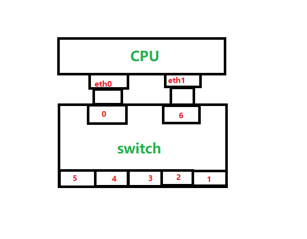
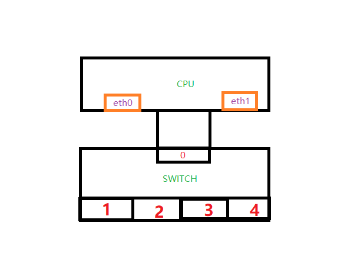
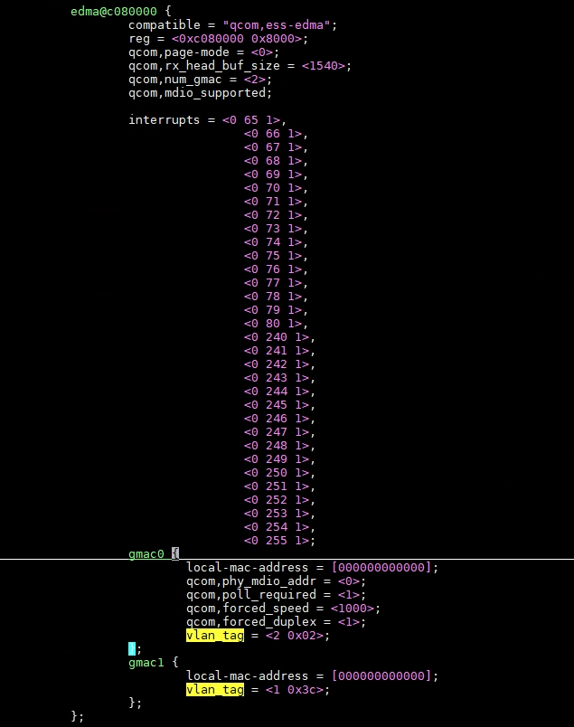
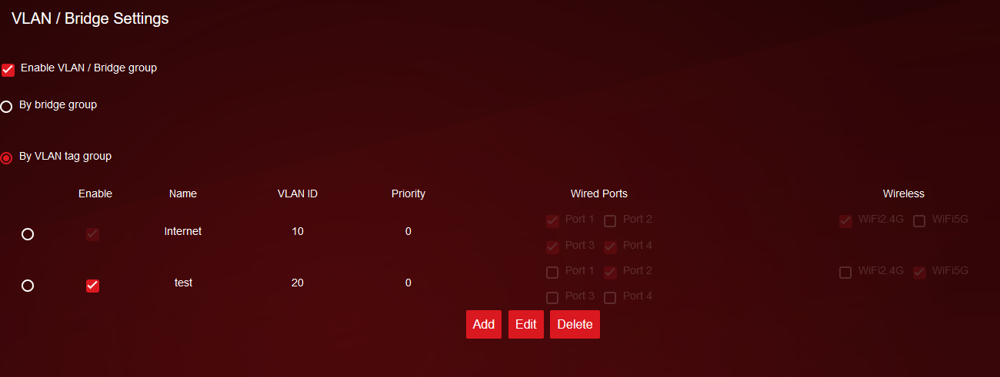
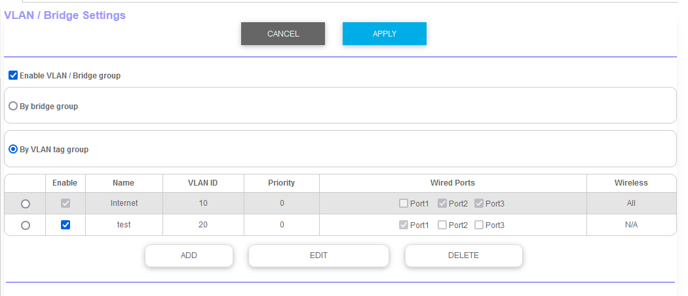
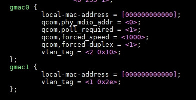
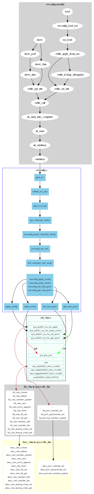
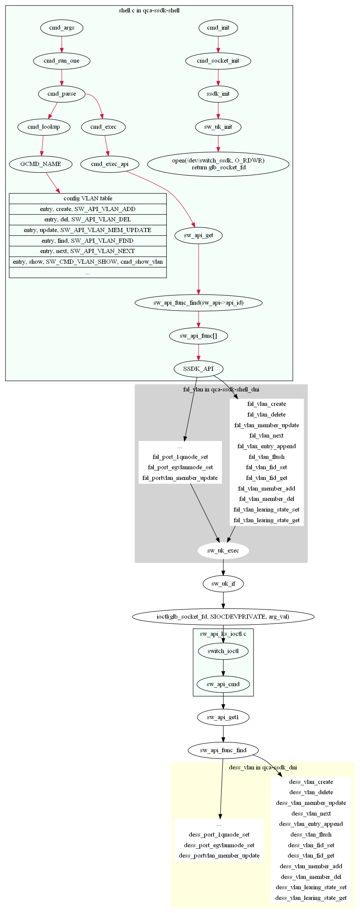

对于像XR500中的只有一个switch, CPU与switch的连接示意图如下所示：

本文档中所有XR500的举例都是基于V2.3.2.122
在console中输入“swconfig dev switch0 show”, 可以看到
VLAN 1:
vid: 1
ports: 1 2 3 4 6
VLAN 2:
vid: 2
ports: 0 5
拿到一个路由器，可以看到它有5个端口，这5个端口从WAN口开始在switch中分别由‘5’，‘4’，‘3’，‘2’，‘1’代表。其实它还有两个端口，这两个端口连接Linux系统的eth0和eth1.
switch除开VLAN功能外，只是一个具有记忆功能的HUB。也就是说在XR500等路由器启动后，不对switch进行配置，它是不分WAN和LAN的，它都是在同一个局域网内。
上面的VLAN1和VLAN2是对WAN和LAN的划分。vlan 1, 顾名思义，是将1 2 3 4 6划分在同一个局域网，而vlan 2 是将端口 0 和 5划分到一个局域网。需要注意的是，这里的数字后没有带t, 也就是不带tag。对于没有带tag的端口它只能划分到一个局域网中，而不是像带tag时的端口可以根据tag的vid来处于不同的局域网。例如：
VLAN 1:
vid: 1
ports: 1 2 3 4 6
VLAN 2:
vid: 2
ports: 0 1 5
上面将端口1（实际上是路由器上标识的端口4）同时设置带VLAN 1和VLAN 2。测试会发现端口1只能拿到VLAN 2中dhcp分配的IP 地址，即使WAN没有任何dhcp server, 端口1也不会从LAN端获取IP地址。因为swconfig是先把端口1划分到VLAN 1，接着又把端口1划分到VLAN 2，最终端口1只在最后设置的VLAN2中有效。
以MINI举例（以下都是基于V2.3.7.22）

如上图所示，mini中的switch与CPU只有一个端口相连，switch发送给CPU的包会带有port_id,CPU会根据port_id来区分该包是走eth0还是走eth1。
在essedma/edma_axi.c中的edma_axi_probe函数中可以看到，将端口ID填充到网络设备查找表（portid_netdev_lookup_tbl）。如下图关于edma的设备树(linux-version/arch/boot/dts/qcom-ipq40xx.dtsi)的中关于eth0和eth1的vlan_tag分别为0x02和0x3c。那么0x02 -> 00000010 -> port1会在网络设备查找表中对应eth0,而0x3c -> 00111100 -> port2, port3, port4, port5会在网络设备查找表对应eth1。这里switch的port5并没有接出来。
在essdma/edma.c中的edma_rx_complete会根据switch中传入的port_id来查询网络设备查找表来找到该port_id对应的网络设备即eth0或eth1。

ssdk_sh vlan entry show
root@RBR40:/# ssdk_sh vlan entry show
SSDK Init OK!
[vid]:1 [fid]:1 [member]:0x1d
[tagged_member]:0x0 [untagged_member]:0x1d [unmodify_member]:0x0 [learn_dis]:disable [pri_en]:disable [pri]:0x0[vid]:2 [fid]:2 [member]:0x3
[tagged_member]:0x0 [untagged_member]:0x3 [unmodify_member]:0x0 [learn_dis]:disable [pri_en]:disable [pri]:0x0total 2 entries
operate done.
swconfig dev switch0 show
VLAN 1:
vid: 1
ports: 0 2 3 4
VLAN 2:
vid: 2
ports: 0 1
对比两个命令来看：
VLAN1: member:0x1d ports:0 2 3 4
VLAN2: meber:0x3 ports: 0 1
0xld-> 00011101 0x3->00000011
这样可以理解为：
bit 0 -> port0; bit 1 -> port1; bit 2 -> port2; bit 3 -> port3; bit 4 -> port4;
那么就可以知道0x1d其实是设置的port0, port2, port3, port4为一个VLAN。而 port0和port1为一个VLAN。
从上面的配置可以知道，WAN和LAN两个局域网都包括端口0，这个switch只通过一个端口连接CPU。在硬件上少一个端口，必须在软件上来对不同的局域网进行区分。
在第1章说的是switch中WAN和LAN的划分，但其实Linux系统还不知道。默认情况下进行的是如下的设置
ifconfig eth1 hw ether lanmac ifconfig eth0 hw ether wanmac ip link set dev eth1 name ethlan ip link set dev eth0 name ethwan brctl addif br0 ethlan ifconfig br0 hw ether lanmac brctrl addif brwan ethwan sw_configvlan "normal"
第3,4行相当于一个改名操作，直接把eth1改名为ethlan,把eth0改名为ethwan。可以发现在这两条指令运行后找不到eth0和eth1了，因为它们已经被ethwan和ethlan替代了。
也就是说当没有vlan的时候ethwan就相当于eth0, ethlan就相当于eth1。后续的net-wan和net-lan对只是对ethwan, ethlan或br0, brwan进行操作。
对于Orbi中WAN口和LAN口的划分其实是分为两步，①edma在初始化的时候根据设备树中的信息来设置，哪些端口走eth0,哪些端口走eth1。②swconfig 配置WAN局域网和LAN局域网。
将XR500的VLAN设置成下所示(5Gwifi添加到VLAN 20)：

| Name | VLAN ID | Ports |
|---|---|---|
| Internet | 10 | 1 3 4, 2.4g |
| test | 20 | 2, 5g |
swconfig dev switch0 show
VLAN 1:
vid: 20
ports: 0t 2 5t 6t
VLAN 2:
vid: 10
ports: 0t 5t
VLAN 3:
vid: 1
ports: 1 3 4 6
cat /tmp/sw.conf
root@XR500:/# cat /tmp/sw.conf
config switch
option name 'switch0'
option reset '1'
option enable_vlan '1'config switch_vlan
option device 'switch0'
option vlan '1'
option vid '20'
option ports '0t 5t 6t 2'config switch_vlan
option device 'switch0'
option vlan '2'
option vid '10'
option ports '0t 5t'config switch_vlan
option device 'switch0'
option vlan '3'
option vid '1'
option ports '6 1 3 4'
brctl show
bridge name bridge id STP enabled interfaces
br0 8000.8c3bad10a33a no ath1
ethlan
tap0
br20 8000.8c3bad10a33b yes ath0
eth0.20
ethlan.20
brwan 8000.8c3bad10a33b no ethwan
VLAN 1 vid : 20, ports: 0t, 2, 5t, 6t。
‘t’指网络包进来的时候，该包必须带20的tag，但进来后会被剥离，但出去的时候又会重新打上该tag。也就是 0，5，6进来前或出去后的包都必须带tag。这也就是brctl show中显示的eth0.20(5), ethlan.20(6)。这里的ethlan其实就是eth1, 但ethwan并不等于eth0。switch内部已经将0.20， 2， 5.20， 6.20配置成一个局域网了。5.20 即为 eth0.20, 而6.20等于ethlan.20(但在此之前需要执行“ip link set dev eth1 name ethlan”).
这里WAN口连接的网络数据要携带VID 20的tag，某个设备连接到路由器LAN口的Port3(对应的应该是switch port2),数据可以不需要携带任何tag。这种情况下LAN端设备和WAN连接的网络可以正常通信。在switch中，数据可能是直接从端口5（进入前和进入后带tag20）到端口2（进入前和出去后不带tag）,不会经过switch端口0和端口6.
而对于WIFI 5G（ath0）无论是与WAN口还是与Port3(对应的应该是switch port2)通信则不会在switch中进行交换数据。从brctrl show中可以看出ath0是与ethlan.20和eth0.20配置在同一网桥，那么WAN口或Port3(对应的应该是switch port2)要与ath0通信则要经过switch端口0和端口6。
VLAN 2 vid: 10, ports: 0t, 5t
switch将0.10和5.10配置成同一个局域网，但可以看到在brctl show中没有eth0.10之类的。是因为Internet VLAN执行的是“ip link set dev eth0.10 name ethwan”, 也就是将eth0.10作为ethwan。目前switch的0端口作为WAN口的物理接口，只有带tag 10的包进来它才能显示为“有网”。
VLAN 3 vid: 1 ports: 1 3 4 6
LAN端的设置，和默认一样。
Orbi中除了VLAN mode都是使用swconfig配置的。对于vlan mode，是使用ssdk.sh。

root@RBR40:/# cat /tmp/ssdk.sh
/usr/sbin/ssdk_sh vlan entry flush
/usr/sbin/ssdk_sh vlan entry create 20
/usr/sbin/ssdk_sh vlan entry append 20 20 0,1 0,1 null null no no
/usr/sbin/ssdk_sh vlan entry create 4075
/usr/sbin/ssdk_sh vlan member add 4075 0 tagged
/usr/sbin/ssdk_sh vlan member add 4075 2 untagged
/usr/sbin/ssdk_sh portvlan defaultcvid set 2 4075
/usr/sbin/ssdk_sh qos ptDefaultCpri set 2 0
/usr/sbin/ssdk_sh vlan entry create 1
/usr/sbin/ssdk_sh vlan member add 1 0 tagged
/usr/sbin/ssdk_sh vlan member add 1 3 untagged
/usr/sbin/ssdk_sh vlan member add 1 4 untagged
/usr/sbin/ssdk_sh portvlan defaultcvid set 3 1
/usr/sbin/ssdk_sh portvlan defaultcvid set 4 1
/usr/sbin/ssdk_sh qos ptDefaultCpri set 3 0
/usr/sbin/ssdk_sh qos ptDefaultCpri set 4 0
/usr/sbin/ssdk_sh vlan entry create 10
/usr/sbin/ssdk_sh vlan entry append 10 10 0,1 0,1 null null no no
/usr/sbin/ssdk_sh misc cpuvid set enable
root@RBR40:/# brctl show
bridge name bridge id STP enabled interfaces
br0 8000.201407112a30 no ath0
ath01
ath02
ath1
ath2
ath21
eth1
br20 8000.201407112a31 yes eth0.20
eth1.4075
brwan 8000.8c3bad193029 no eth0.10
#flush all VLAN entries
/usr/sbin/ssdk_sh vlan entry flush
#create a VLAN entry 20
/usr/sbin/ssdk_sh vlan entry create 20
#append a VLAN entry
/usr/sbin/ssdk_sh vlan entry append 20 20 0,1 0,1 null null no no
#create a VLAN entry 4075
/usr/sbin/ssdk_sh vlan entry create 4075
#add member 0 to entry 4075 with tag
/usr/sbin/ssdk_sh vlan member add 4075 0 tagged
#add member 2 to entry 4075 to entry 4075 without tag
/usr/sbin/ssdk_sh vlan member add 4075 2 untagged
#set default VLAN id 4075 of port 2
/usr/sbin/ssdk_sh portvlan defaultcvid set 2 4075
#set default ctag priority for received frames of a port "<port_id> cpri:0-7"
/usr/sbin/ssdk_sh qos ptDefaultCpri set 2 0
#create vlan entry 1
/usr/sbin/ssdk_sh vlan entry create 1
#add vlan member 0, 3, 4 to vlan entry 1
/usr/sbin/ssdk_sh vlan member add 1 0 tagged
/usr/sbin/ssdk_sh vlan member add 1 3 untagged
/usr/sbin/ssdk_sh vlan member add 1 4 untagged#set default VLAN id 1 of port 3 and port 4
/usr/sbin/ssdk_sh portvlan defaultcvid set 3 1
/usr/sbin/ssdk_sh portvlan defaultcvid set 4 1#set default 0 priority for received frames of port 3 and port 4
/usr/sbin/ssdk_sh qos ptDefaultCpri set 3 0
/usr/sbin/ssdk_sh qos ptDefaultCpri set 4 0#create vlan entry 10
/usr/sbin/ssdk_sh vlan entry create 10
#append a vlan entry
/usr/sbin/ssdk_sh vlan entry append 10 10 0,1 0,1 null null no no
#set to cpu vid status <enable|disable>
/usr/sbin/ssdk_sh misc cpuvid set enable
对于用ssdk_sh配置switch的命令的流程：
由于没有指令手册，关于一些指令的功能其实可以通过测试来了解。比如vlan 10在vlan append指令执行后为什么没有执行
/usr/sbin/ssdk_sh vlan member add 10 0 tagged
/usr/sbin/ssdk_sh vlan member add 10 1 tagged
可以一条条指令的执行，然后调用ssdk_sh vlan entry show,可以知道端口0和端口1的已被添加到vlan 10的tagged member中了。
10 [fid]:10 [member]:0x3
[tagged_member]:0x3 [untagged_member]:0x0 [unmodify_member]:0x0 [learn_dis]:disable [pri_en]:disable [pri]:0x0
因为是一个端口与CPU通信所以这里在设置vlan 20的时候并不是将switch中的LAN所对应的端口打上tag20,而是打上（4095-20）。这样做可以使eth0对应的vlan端口和eth1中对应的vlan端口必须通过CPU来通信，而不是都配置成tag20的时候可以直接通过switch来进行通信。通过CPU来交换vlan可能会降低速度，当初这么设计可能是可以用通过防火墙来统一控制端口。
从vlan配置的脚本中可以看到之前是通过swconfig命令来设置，从/tmp/sw.conf中也可以看到，至于为什么会换成ssdk_sh来设置，现在也不得而知。
root@RBR40:/# cat /tmp/sw.conf
config switch
option name 'switch0'
option reset '1'
option enable_vlan '1'config switch_vlan
option device 'switch0'
option vlan '1'
option vid '20'
option ports '0t 1t'config switch_vlan
option device 'switch0'
option vlan '2'
option vid '4075'
option ports '0t 2'config switch_vlan
option device 'switch0'
option vlan '3'
option vid '1'
option ports '0t 3 4'config switch_vlan
option device 'switch0'
option vlan '4'
option vid '10'
option ports '0t 1t'
root@RBR40:/# ssdk_sh vlan entry show
SSDK Init OK!
[vid]:1 [fid]:1 [member]:0x19
[tagged_member]:0x1 [untagged_member]:0x18 [unmodify_member]:0x0 [learn_dis]:disable [pri_en]:disable [pri]:0x0[vid]:10 [fid]:10 [member]:0x3
[tagged_member]:0x3 [untagged_member]:0x0 [unmodify_member]:0x0 [learn_dis]:disable [pri_en]:disable [pri]:0x0[vid]:20 [fid]:20 [member]:0x3
[tagged_member]:0x3 [untagged_member]:0x0 [unmodify_member]:0x0 [learn_dis]:disable [pri_en]:disable [pri]:0x0[vid]:4075 [fid]:4075 [member]:0x5
[tagged_member]:0x1 [untagged_member]:0x4 [unmodify_member]:0x0 [learn_dis]:disable [pri_en]:disable [pri]:0x0total 4 entries
operate done.
swconfig dev switch0 show
vid: 1 ports: 0 2 3 4VLAN 2:
vid: 2 ports: 0 1
可以看到这里的swconfig dev switch0 show并不准确，它所显示的是上一次也就是normal情况下使用swconfig dev switch0 /tmp/sw.conf的信息。但ssdk_sh显示的信息是正确的，关于swconfig和ssdk_sh的区别可以看第5章。
路由器为了方便用户操作将WAN口设置为固定的，其实对于WAN口和LAN口在同一个switch中，WAN口是可以改变。甚至可以有多个WAN口，当然这样可能会带来其它的问题（可能会有多个dhcp server）。
先看默认情况下的switch：
VLAN 1:
vid: 1
ports: 1 2 3 4 6
VLAN 2:
vid: 2
ports: 0 5
物理WAN网线直接连接的是端口5，它其实是与端口0在同一个网桥或局域网，也就是可以把0口作为WAN口。但端口0我们并看不到，但它是与Linux系统端的eth0相连的, 因此又可以把eth0作为WAN口。而默认情况下又通过“ip link set dev eth0 name ethwan”, 将eth0改名为ethwan，然后再用brctl addif brwan ethwan将ethwan添加到brwan网桥中，那么最终可以将brwan视作WAN口。
目标：将端口2（路由器壳上标记的端口3）作为WAN口，其它的作为LAN
那switch的显示应该是这样的
VLAN 1:
vid: 1
ports: 1 3 4 5 6
VLAN 2:
vid: 2
ports: 0 2
只需将/tmp/sw.conf中的port 2和 port 5对换即可
config switch
option name 'switch0'
option reset '1'
option enable_vlan '1'config switch_vlan
option device 'switch0'
option vlan '1'
option vid '1'
option ports '6 1 3 4 5'config switch_vlan
option device 'switch0'
option vlan '2'
option vid '2'
option ports '0 2'
然后运行swconfig dev switch0 load /tmp/sw.conf就可以了。
dess vlan member update
也会调用到dess vlan member update
ssdk_sh vlan entry show
SSDK Init OK!switch_ioctl
sw_uk_exec shell
sw_uk_if shell
switch_ioctl
sw_uk_exec shell
sw_uk_if shell
switch_ioctl
对于mini改变WAN口并不方便，但可以通过改变设备树中eth0(gmac0)和eth1(gmac1)的vlan_tag来换WAN口。
根据2.2节Orbi中WAN/LAN的划分，可以设置如下：
目标将端口4设置为WAN口，端口1，2，3 为LAN口
eth0和eth1初始化端口
端口4->00010000->0x10
端口1,2,3(,5)->00101110->0x2e

这样端口4会走eth0,端口1,2,3会走eth1
swconfig dev load /tmp/sw.conf
swconfig需要将端口1,2,3配置成一个局域网，端口4配置成一个局域网。
root@RBR40:/# cat /tmp/sw.conf
config switch
option name 'switch0'
option reset '1'
option enable_vlan '1'config switch_vlan
option device 'switch0'
option vlan '1'
option vid '1'
option ports '0 1 2 3 'config switch_vlan
option device 'switch0'
option vlan '2'
option vid '2'
option ports '0 4'
通过上面两步就可以实现端口4和端口1的功能互换，端口4作为WAN口。
XR500和mini与switch交换的过程有两种：swconfig和ssdk_sh。swconfig通过netlink直接与内核通信来操作switch，而ssdk_sh通过打开/dev/switch_ssdk来对switch进行操作。其实这两个命令最终调用的最底层函数都是一样的即dess_xxx.c(dess_vlan.c, dess_portvlan.c ...)。
以下是swconfig的主要执行过程。
文件路径：
swconfig module: package/network/config/swconfig
swconfig.c: linux内核code/drivers/net/phy/
qca-nss-ssdk: fal, rel, dess

无论是XR500中关于swconfig命令都是swconfig模块实现的。我们主要用到的是“swconfig dev switch0 show”和“swconfig dev switch0 load /tmp/sw.conf”.
swconfig dev switch0 load /tmp/sw.conf
swconfig dev switch0 show
show命令的调用过程如上图，它最终获取的只是qca_phy_priv中的数据，它并不是获取的switch端口的信息。也就是说，它获取的只是上次swconfig命令对switch设置的信息。如果调用其它的命令对switch进行设置，那么swconfig show命令就不准确了。

ssdk_sh是在qca-ssdk-shell_dni，不带参数直接运行ssdk_sh会进入用户交互状态。这里主要介绍的是"ssdk_sh vlan"。
在ssdk_sh的主程序shell.c中首先调用的是cmd_init，这个函数主要是打开“/dev/switch_ssdk”模块并返回文件描述符。接着cmd_args会被调用，cmd_args首先调用cmd_parse通过传入的命令参数在CONFIG VLAN TABLE中查找改命令所对应的API id并返回。cmd_exec通过获取到的api id来执行fal_vlan中所对应的函数。需要注意的是这里的fal_vlan和swconfig命令所调用的不同，这里的fal_vlan中的函数大多都是包裹函数都要执行sw_uk_exec。 sw_uk_exec通过ioctl函数与之前在cmd_init中打开的switch_ssdk模块进行通信。ioctl对应的于switch_ssdk中的函数其实是switch_ioctl. switch_ioctl最终会调用到dess_vlan中对应的函数。这里调用的dess_vlan和之前swconfig命令所调用的就是一样的了。
虽然VLAN的脚本好像有很多，但其实知道怎么配置switch和brctl就可以了。因为脚本中最终也是来配置/tmp/sw.conf和bridge。
swconfig和ssdk_sh虽然操作指令不同，最终操作switch的函数是一样的。